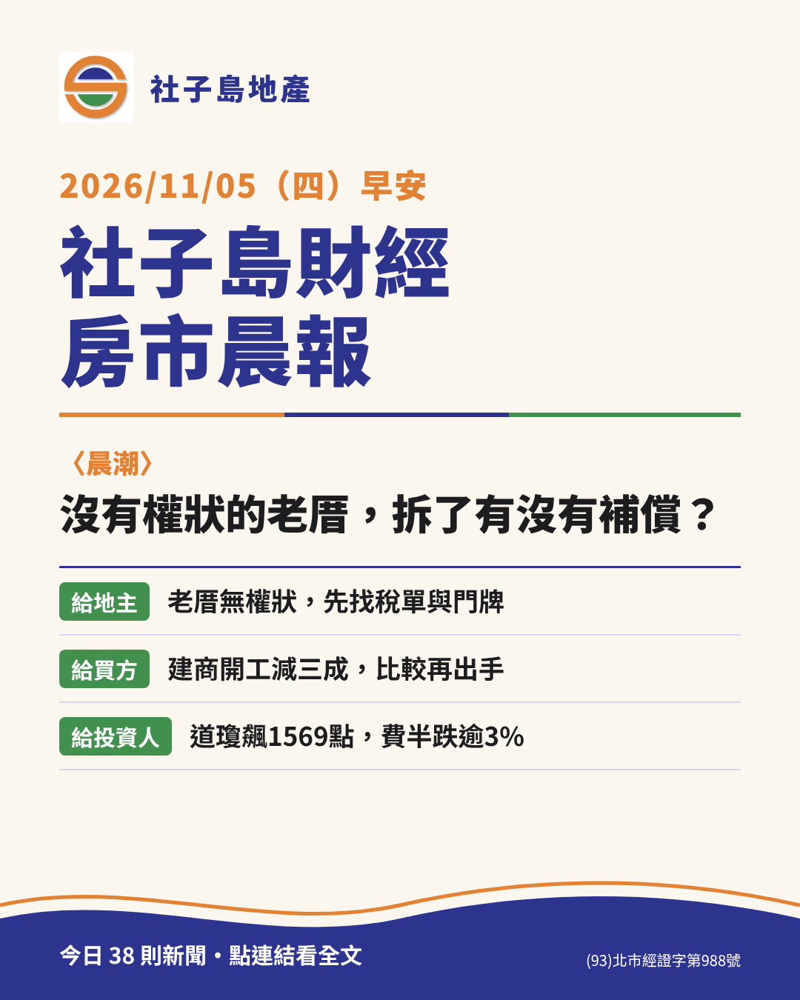

2026/11/05 (四) 早安
社子島財經房市晨報｜沒有權狀的老厝，拆了有沒有補償？
今日 38 則財經與房市新聞，依主題分成 10 類，社子島、主商圈與台北市的新聞排在最前面。點標題就能開啟原文。
〈潮汐表〉今天的三道潮水
- 給地主沒有權狀的老厝，不等於沒有補償；先把老房屋稅單、門牌編釘證明與戶籍資料找出來，實際認定以市府公告為準。
- 給買方建商推案縮手，前三季開工量下滑31%；第2季全國十大房貸熱區出爐，看房前先比較區域與貸款條件。
- 給投資人美期中選舉落幕，道瓊狂飆1,569點、費半跌逾3%；台股4日收跌358點，外資賣超近1,500億，台幣收32.821元。
〈晨潮〉
沒有權狀的老厝，拆了有沒有補償？
昨天阿公在濕地邊問我們：「阮這間厝是阮阿爸家己起的，從來就無權狀。以後若拆，無權狀的厝，敢有補償？欲按怎證明這間厝是阮的？」今天週四，正好是我們聊區段徵收的日子，就從這間沒有權狀的老厝說起。
先說一個常見的誤會：沒有權狀，不等於房子是違建。島上很多老厝是早年自己蓋的，只是從來沒去地政事務所辦「保存登記」，所以手上沒有建物權狀。這樣的房子，有的會被認定為合法建築物，有的會被認定為違章建築；認定不同，拿到的錢也不同，所以第一步，是弄清楚自己的房子屬於哪一種。
合法建築物被拆，依《土地徵收條例》第31條，建築改良物的補償費按徵收當時的重建價格估定，不是看房子現在值多少。被認定為違章建築的，依《臺北市舉辦公共工程拆遷補償自治條例》，發的是「拆遷處理費」，看蓋的年代分級：民國52年以前的舊有違章建築，按合法建築物重建價格的85%計算；53年到77年8月1日前的既存違章建築，依樓層與面積按70%或50%計算；77年8月1日以後才蓋的，不發處理費。比例與條件以臺北市現行條文為準。
那怎麼證明這間厝是您家的、是哪一年蓋的？條例與施行細則列的佐證，包括戶籍設籍、門牌編釘證明、原始設立稅籍的完納稅捐證明、房屋稅籍資料，以及航空照片等。所以家裡那疊老房屋稅單、舊戶口名簿，千萬別丟；房屋稅單上的納稅義務人與面積，也是日後核算的重要依據。
沒有權狀的老厝，先準備這三樣
- ① 稅籍：歷年房屋稅單或稅籍證明，看得到納稅義務人、面積與設籍年份。
- ② 門牌與戶籍：門牌編釘證明、舊戶口名簿，證明一家人住在這裡多久。
- ③ 年代：建築年份決定是合法建築物還是哪一級違章建築；早年的航空照片也是佐證。認定以市府公告為準。
最後要分清楚：補償是房子的財產損失，安置是一家人往後住哪裡，兩件事要分開看。市府說社子島會戶戶安置、先安置後拆遷、分期分區，實際的補償認定與安置條件，請以市府公告的拆遷補償安置計畫為準。今天主商圈的新聞，市長候選人對社子島誰先誰後仍各有說法，往下滑就能看到。
——社子島地產團隊
主商圈：社子島・北士科・關渡洲美平原5 則
社子島開發與松山機場遷建誰先誰後，市長選戰兩方續有攻防；議員問關渡平原離北士科更近；北投前10月交易量年增率全市第一
台北市6 則
松山機場周邊公寓5年漲24%；南港新案接連登場；都更門檻要不要降到50%，仍是選戰焦點
市地重劃・區段徵收3 則
週四談區段徵收：高雄岡山產業用地案內政部都委會通過，後續要走抵價地比例報核、協議價購與公聽會；台中烏日九德區段徵收工程持續推進
利率・房貸・資金3 則
第2季全國十大房貸熱區出爐；台幣續貶，央行表示不盯特定價位
房市走向2 則
建商推案縮手，前三季開工量下滑31%；汐止預售案隨捷運汐東線施工推進
土地・產業用地1 則
市府代售土地47標，國華商圈在列
都更・合建3 則
內壢首件公辦都更開工；永和頂溪公辦都更A區簽約，新北市長要求B、C區同步推動
稅務與法律實務5 則
地價稅11月開徵：沒收到稅單怎麼辦、房地分給不同子女可能失去自用住宅優惠、第2間房的省稅條件
高齡與人口4 則
65歲以上人口已占20.7%，一年少了超過10萬人；長照人力與外籍看護遞補是家庭最直接的壓力
今日財經大事6 則
美期中選舉落幕，道瓊狂飆1,569點、費半跌逾3%；台股4日震盪1,885點收跌358點，外資賣超近1,500億；台幣收32.821元
〈阿公講古〉
週四早上，阿公走到坤天亭，廟埕剛掃過，香爐的煙慢慢往天上飄，幾個老朋友已經在樹下擺好棋盤。
「原來無權狀，嘛毋是講無就無。」阿公摸著口袋裡那張摺得四四方方的房屋稅單：「阮阿爸每年都去繳稅，單仔攏收佇鐵盒仔內，伊講，這是咱的厝，有一工會用著。」
他說小時候大水來過幾次，家家戶戶把棉被、米缸往二樓搬，水退了，大家先到廟口集合，互相看看誰家還缺什麼。「厝會舊，人會老，毋過厝邊頭尾的情，攏佇遮。」
下棋的老朋友說起他女兒住的地方在辦市地重劃，阿公聽了皺起眉頭：「伊遐是市地重劃，阮遮是區段徵收。這兩款到底差佇佗位？為啥物阮遮毋是重劃？」
阿公的問題，我們明天回答。
〈廟口泡茶區〉
阿公下完棋，走到廟口榕樹下，茶已經泡好了。家裡的老厝有沒有權狀、稅單收在哪裡，都可以帶來一起看看。
區段徵收的公文、抵價地與配地，我們陪您一份一份看懂，再決定怎麼選；老厝的稅單與門牌證明，也陪您先整理好。
想問問您：您家的老厝有權狀嗎？還是像阿公一樣，只有一疊房屋稅單？打個電話告訴我們，下次泡茶時一起聊。
不急著成交。我們是守在堤邊的人，守著每一塊土地的權益，直到把它交到願意耕耘它的人手上。
📞 歡迎先來電 0922-252-969先通個電話聊聊，再約時間來廟口喝茶。
 掃描 QR code，加 LINE 好友LINE ID：@shezidao💬 加 LINE
掃描 QR code，加 LINE 好友LINE ID：@shezidao💬 加 LINE
社子島地產團隊｜service@shezidao.com.tw
台北市士林區延平北路九段288號
週一至週六 9:30–18:00（週四 9:30–13:30），週日公休📞 來電 0922-252-969
本站由社子島地產開發有限公司經營，為民間不動產資訊網站，非臺北市政府官方網站；政府公告請以臺北市政府與地政局網站為準。
本期新聞由社子島地產團隊自經濟日報、聯合新聞網、中央社、自由時報、中時新聞網、風傳媒、NOWnews今日新聞、安傳媒、大紀元、中央廣播電臺、Yahoo奇摩新聞、蕃新聞 等媒體收集，標題照原文，點擊即可開啟原始報導；法規說明僅供參考，實際權利義務以主管機關公告為準。〈晨潮〉〈阿公講古〉為本團隊之參考意見，不構成投資建議，亦不代表支持任何候選人。〈阿公講古〉的阿公，是我們依島上長輩的身影寫成的人物。